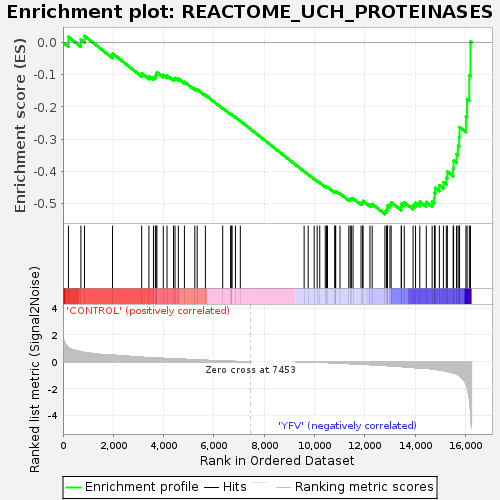
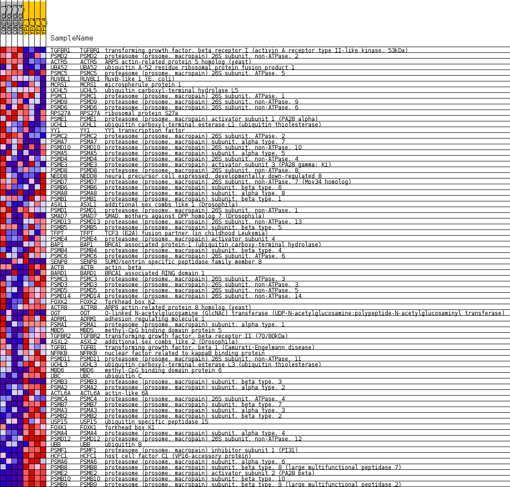
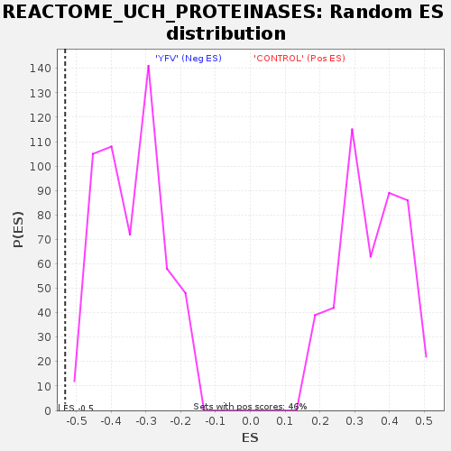

| Dataset | MATRIZ_GSE99081_collapsed_to_symbols.gsea_CLASE_99081.cls#CONTROL_versus_YFV |
| Phenotype | gsea_CLASE_99081.cls#CONTROL_versus_YFV |
| Upregulated in class | YFV |
| GeneSet | REACTOME_UCH_PROTEINASES |
| Enrichment Score (ES) | -0.5330072 |
| Normalized Enrichment Score (NES) | -1.5644014 |
| Nominal p-value | 0.0 |
| FDR q-value | 0.08666654 |
| FWER p-Value | 0.977 |

| SYMBOL | TITLE | RANK IN GENE LIST | RANK METRIC SCORE | RUNNING ES | CORE ENRICHMENT | |
|---|---|---|---|---|---|---|
| 1 | TGFBR1 | transforming growth factor, beta receptor I (activin A receptor type II-like kinase, 53kDa) | 217 | 1.037 | 0.0173 | No |
| 2 | PSMD2 | proteasome (prosome, macropain) 26S subunit, non-ATPase, 2 | 711 | 0.738 | 0.0087 | No |
| 3 | ACTR5 | ARP5 actin-related protein 5 homolog (yeast) | 853 | 0.687 | 0.0203 | No |
| 4 | UBA52 | ubiquitin A-52 residue ribosomal protein fusion product 1 | 1969 | 0.488 | -0.0342 | No |
| 5 | PSMC5 | proteasome (prosome, macropain) 26S subunit, ATPase, 5 | 3127 | 0.329 | -0.0961 | No |
| 6 | RUVBL1 | RuvB-like 1 (E. coli) | 3414 | 0.298 | -0.1050 | No |
| 7 | MCRS1 | microspherule protein 1 | 3595 | 0.278 | -0.1079 | No |
| 8 | UCHL5 | ubiquitin carboxyl-terminal hydrolase L5 | 3672 | 0.269 | -0.1046 | No |
| 9 | PSMC1 | proteasome (prosome, macropain) 26S subunit, ATPase, 1 | 3697 | 0.267 | -0.0982 | No |
| 10 | PSMD9 | proteasome (prosome, macropain) 26S subunit, non-ATPase, 9 | 3732 | 0.263 | -0.0925 | No |
| 11 | PSMD6 | proteasome (prosome, macropain) 26S subunit, non-ATPase, 6 | 3986 | 0.243 | -0.1009 | No |
| 12 | RPS27A | ribosomal protein S27a | 4134 | 0.232 | -0.1031 | No |
| 13 | PSME1 | proteasome (prosome, macropain) activator subunit 1 (PA28 alpha) | 4391 | 0.212 | -0.1127 | No |
| 14 | UCHL1 | ubiquitin carboxyl-terminal esterase L1 (ubiquitin thiolesterase) | 4453 | 0.207 | -0.1103 | No |
| 15 | YY1 | YY1 transcription factor | 4584 | 0.194 | -0.1127 | No |
| 16 | PSMC2 | proteasome (prosome, macropain) 26S subunit, ATPase, 2 | 4826 | 0.173 | -0.1224 | No |
| 17 | PSMA7 | proteasome (prosome, macropain) subunit, alpha type, 7 | 5238 | 0.134 | -0.1439 | No |
| 18 | PSMD10 | proteasome (prosome, macropain) 26S subunit, non-ATPase, 10 | 5332 | 0.127 | -0.1459 | No |
| 19 | PSMA5 | proteasome (prosome, macropain) subunit, alpha type, 5 | 5659 | 0.102 | -0.1630 | No |
| 20 | PSMD4 | proteasome (prosome, macropain) 26S subunit, non-ATPase, 4 | 6348 | 0.049 | -0.2041 | No |
| 21 | PSME3 | proteasome (prosome, macropain) activator subunit 3 (PA28 gamma; Ki) | 6661 | 0.029 | -0.2226 | No |
| 22 | PSMD8 | proteasome (prosome, macropain) 26S subunit, non-ATPase, 8 | 6710 | 0.026 | -0.2248 | No |
| 23 | NEDD8 | neural precursor cell expressed, developmentally down-regulated 8 | 6713 | 0.025 | -0.2242 | No |
| 24 | PSMD7 | proteasome (prosome, macropain) 26S subunit, non-ATPase, 7 (Mov34 homolog) | 6854 | 0.018 | -0.2323 | No |
| 25 | PSMB6 | proteasome (prosome, macropain) subunit, beta type, 6 | 7048 | 0.008 | -0.2440 | No |
| 26 | PSMA8 | proteasome (prosome, macropain) subunit, alpha type, 8 | 9584 | -0.007 | -0.4007 | No |
| 27 | PSMB1 | proteasome (prosome, macropain) subunit, beta type, 1 | 9745 | -0.014 | -0.4101 | No |
| 28 | ASXL1 | additional sex combs like 1 (Drosophila) | 9983 | -0.024 | -0.4241 | No |
| 29 | PSMD1 | proteasome (prosome, macropain) 26S subunit, non-ATPase, 1 | 10102 | -0.030 | -0.4305 | No |
| 30 | SMAD7 | SMAD, mothers against DPP homolog 7 (Drosophila) | 10205 | -0.038 | -0.4357 | No |
| 31 | PSMD13 | proteasome (prosome, macropain) 26S subunit, non-ATPase, 13 | 10422 | -0.053 | -0.4475 | No |
| 32 | PSMB5 | proteasome (prosome, macropain) subunit, beta type, 5 | 10473 | -0.058 | -0.4488 | No |
| 33 | TFPT | TCF3 (E2A) fusion partner (in childhood Leukemia) | 10512 | -0.061 | -0.4494 | No |
| 34 | PSME4 | proteasome (prosome, macropain) activator subunit 4 | 10799 | -0.085 | -0.4646 | No |
| 35 | BAP1 | BRCA1 associated protein-1 (ubiquitin carboxy-terminal hydrolase) | 10823 | -0.087 | -0.4634 | No |
| 36 | PSMB4 | proteasome (prosome, macropain) subunit, beta type, 4 | 10839 | -0.088 | -0.4617 | No |
| 37 | PSMC6 | proteasome (prosome, macropain) 26S subunit, ATPase, 6 | 11010 | -0.102 | -0.4692 | No |
| 38 | SENP8 | SUMO/sentrin specific peptidase family member 8 | 11359 | -0.135 | -0.4868 | No |
| 39 | ACTB | actin, beta | 11418 | -0.141 | -0.4862 | No |
| 40 | BARD1 | BRCA1 associated RING domain 1 | 11461 | -0.145 | -0.4845 | No |
| 41 | PSMC3 | proteasome (prosome, macropain) 26S subunit, ATPase, 3 | 11528 | -0.149 | -0.4842 | No |
| 42 | PSMD3 | proteasome (prosome, macropain) 26S subunit, non-ATPase, 3 | 11846 | -0.178 | -0.4985 | No |
| 43 | PSMD5 | proteasome (prosome, macropain) 26S subunit, non-ATPase, 5 | 11911 | -0.185 | -0.4970 | No |
| 44 | PSMD14 | proteasome (prosome, macropain) 26S subunit, non-ATPase, 14 | 11924 | -0.186 | -0.4922 | No |
| 45 | FOXK2 | forkhead box K2 | 12200 | -0.214 | -0.5029 | No |
| 46 | ACTR8 | ARP8 actin-related protein 8 homolog (yeast) | 12289 | -0.223 | -0.5018 | No |
| 47 | OGT | O-linked N-acetylglucosamine (GlcNAc) transferase (UDP-N-acetylglucosamine:polypeptide-N-acetylglucosaminyl transferase) | 12795 | -0.276 | -0.5248 | Yes |
| 48 | ADRM1 | adhesion regulating molecule 1 | 12860 | -0.283 | -0.5204 | Yes |
| 49 | PSMA1 | proteasome (prosome, macropain) subunit, alpha type, 1 | 12891 | -0.287 | -0.5138 | Yes |
| 50 | MBD5 | methyl-CpG binding domain protein 5 | 12897 | -0.288 | -0.5056 | Yes |
| 51 | TGFBR2 | transforming growth factor, beta receptor II (70/80kDa) | 12995 | -0.300 | -0.5027 | Yes |
| 52 | ASXL2 | additional sex combs like 2 (Drosophila) | 13042 | -0.306 | -0.4965 | Yes |
| 53 | TGFB1 | transforming growth factor, beta 1 (Camurati-Engelmann disease) | 13444 | -0.357 | -0.5107 | Yes |
| 54 | NFRKB | nuclear factor related to kappaB binding protein | 13450 | -0.358 | -0.5004 | Yes |
| 55 | PSMD11 | proteasome (prosome, macropain) 26S subunit, non-ATPase, 11 | 13564 | -0.374 | -0.4963 | Yes |
| 56 | UCHL3 | ubiquitin carboxyl-terminal esterase L3 (ubiquitin thiolesterase) | 13914 | -0.426 | -0.5053 | Yes |
| 57 | MBD6 | methyl-CpG binding domain protein 6 | 14012 | -0.443 | -0.4982 | Yes |
| 58 | UBC | ubiquitin C | 14182 | -0.479 | -0.4944 | Yes |
| 59 | PSMB3 | proteasome (prosome, macropain) subunit, beta type, 3 | 14438 | -0.500 | -0.4954 | Yes |
| 60 | PSMA2 | proteasome (prosome, macropain) subunit, alpha type, 2 | 14672 | -0.535 | -0.4939 | Yes |
| 61 | ACTL6A | actin-like 6A | 14762 | -0.556 | -0.4830 | Yes |
| 62 | PSMC4 | proteasome (prosome, macropain) 26S subunit, ATPase, 4 | 14766 | -0.557 | -0.4667 | Yes |
| 63 | PSMB7 | proteasome (prosome, macropain) subunit, beta type, 7 | 14794 | -0.565 | -0.4516 | Yes |
| 64 | PSMA3 | proteasome (prosome, macropain) subunit, alpha type, 3 | 14958 | -0.609 | -0.4436 | Yes |
| 65 | PSMB2 | proteasome (prosome, macropain) subunit, beta type, 2 | 15120 | -0.662 | -0.4340 | Yes |
| 66 | USP15 | ubiquitin specific peptidase 15 | 15236 | -0.703 | -0.4203 | Yes |
| 67 | FOXK1 | forkhead box K1 | 15276 | -0.727 | -0.4012 | Yes |
| 68 | PSMA4 | proteasome (prosome, macropain) subunit, alpha type, 4 | 15508 | -0.833 | -0.3908 | Yes |
| 69 | PSMD12 | proteasome (prosome, macropain) 26S subunit, non-ATPase, 12 | 15525 | -0.844 | -0.3668 | Yes |
| 70 | UBB | ubiquitin B | 15642 | -0.918 | -0.3468 | Yes |
| 71 | PSMF1 | proteasome (prosome, macropain) inhibitor subunit 1 (PI31) | 15701 | -0.986 | -0.3211 | Yes |
| 72 | HCFC1 | host cell factor C1 (VP16-accessory protein) | 15748 | -1.035 | -0.2933 | Yes |
| 73 | PSMA6 | proteasome (prosome, macropain) subunit, alpha type, 6 | 15762 | -1.053 | -0.2630 | Yes |
| 74 | PSMB8 | proteasome (prosome, macropain) subunit, beta type, 8 (large multifunctional peptidase 7) | 16014 | -1.655 | -0.2295 | Yes |
| 75 | PSME2 | proteasome (prosome, macropain) activator subunit 2 (PA28 beta) | 16061 | -1.905 | -0.1759 | Yes |
| 76 | PSMB10 | proteasome (prosome, macropain) subunit, beta type, 10 | 16150 | -2.694 | -0.1016 | Yes |
| 77 | PSMB9 | proteasome (prosome, macropain) subunit, beta type, 9 (large multifunctional peptidase 2) | 16195 | -3.614 | 0.0027 | Yes |

